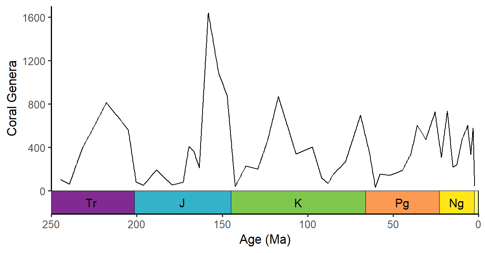
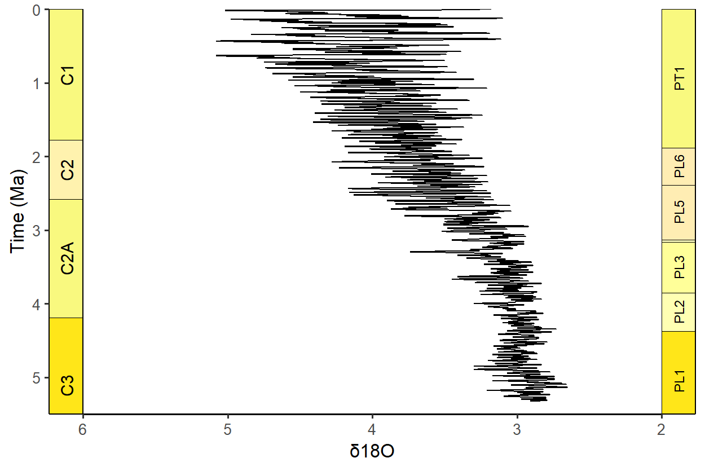
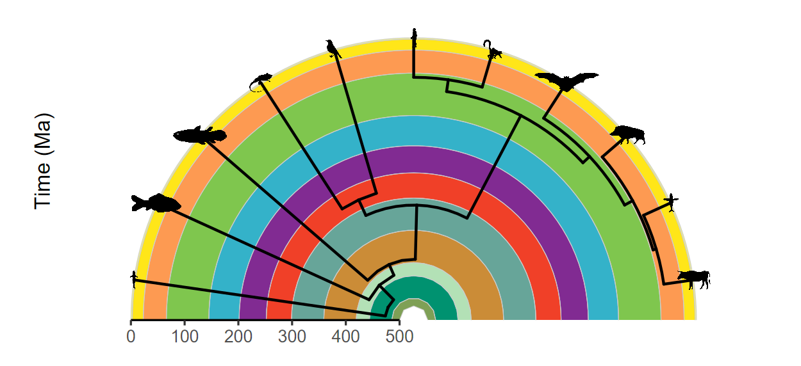
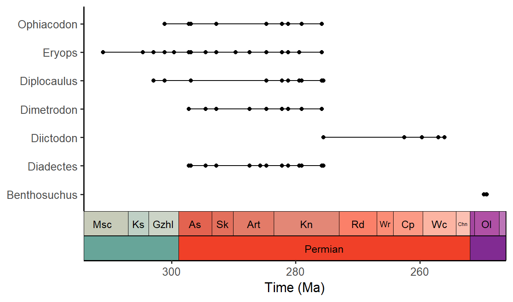

Overview
deeptime extends the functionality of other plotting packages (notably ggplot2) to help facilitate the plotting of data over long time intervals, including, but not limited to, geological, evolutionary, and ecological data. The primary goal of deeptime is to enable users to add highly customizable timescales to their visualizations. Other functions are also included to assist with other areas of deep time visualization.
Installation
# get the stable version from CRAN
install.packages("deeptime")
# or get the development version from github
# install.packages("devtools")
devtools::install_github("willgearty/deeptime")Usage
Add one or more timescales to virtually any ggplot2 plot!
The main function of deeptime is coord_geo(), which functions just like coord_trans() from ggplot2. You can use this function to add highly customizable timescales to a wide variety of ggplots.
library(divDyn)
data(corals)
# this is not a proper diversity curve but it gets the point across
coral_div <- corals %>% filter(stage != "") %>%
group_by(stage) %>%
summarise(n = n()) %>%
mutate(stage_age = (stages$max_age[match(stage, stages$name)] +
stages$min_age[match(stage, stages$name)])/2)
ggplot(coral_div) +
geom_line(aes(x = stage_age, y = n)) +
scale_x_reverse("Age (Ma)") +
ylab("Coral Genera") +
coord_geo(xlim = c(250, 0), ylim = c(0, 1700)) +
theme_classic(base_size = 16)
Lots of timescales available!
# Load packages
library(gsloid)
# Plot two different timescales
ggplot(lisiecki2005) +
geom_line(aes(x = d18O, y = Time / 1000), orientation = "y") +
scale_y_reverse("Time (Ma)") +
scale_x_reverse("\u03B418O") +
coord_geo(
dat = list("Geomagnetic Polarity Chron",
"Planktic foraminiferal Primary Biozones"),
xlim = c(6, 2), ylim = c(5.5, 0), pos = list("l", "r"),
rot = 90, skip = "PL4", size = list(5, 4)
) +
theme_classic(base_size = 16)
Super flexible, supports multiple layouts, and works great with other packages!
# Load packages
library(ggtree)
library(rphylopic)
# Get vertebrate phylogeny
library(phytools)
data(vertebrate.tree)
vertebrate.tree$tip.label[vertebrate.tree$tip.label ==
"Myotis_lucifugus"] <- "Vespertilioninae"
vertebrate_data <- data.frame(species = vertebrate.tree$tip.label,
name = vertebrate.tree$tip.label)
# Plot the phylogeny with a timescale
revts(ggtree(vertebrate.tree, size = 1)) %<+%
vertebrate_data +
geom_phylopic(aes(name = name), size = 25) +
scale_x_continuous("Time (Ma)", breaks = seq(-500, 0, 100),
labels = seq(500, 0, -100), limits = c(-500, 0),
expand = expansion(mult = 0)) +
scale_y_continuous(guide = NULL) +
coord_geo_radial(dat = "periods", end = 0.5 * pi) +
theme_classic(base_size = 16)
Does lots of other things too!
Plot fossil occurence ranges
library(palaeoverse)
# Filter occurrences
occdf <- subset(tetrapods, accepted_rank == "genus")
occdf <- subset(occdf, accepted_name %in%
c("Eryops", "Dimetrodon", "Diadectes", "Diictodon",
"Ophiacodon", "Diplocaulus", "Benthosuchus"))
# Plot occurrences
ggplot(data = occdf) +
geom_points_range(aes(x = (max_ma + min_ma)/2, y = accepted_name)) +
scale_x_reverse(name = "Time (Ma)") +
ylab(NULL) +
coord_geo(pos = list("bottom", "bottom"), dat = list("stages", "periods"),
abbrv = list(TRUE, FALSE), expand = TRUE, size = "auto") +
theme_classic(base_size = 16)
Use standardized geological patterns
# Load packages
library(rmacrostrat)
library(ggrepel)
# Retrieve the Macrostrat units in the San Juan Basin column
san_juan_units <- get_units(column_id = 489, interval_name = "Cretaceous")
# Specify x_min and x_max in dataframe
san_juan_units$x_min <- 0
san_juan_units$x_max <- 1
# Tweak values for overlapping units
san_juan_units$x_max[10] <- 0.5
san_juan_units$x_min[11] <- 0.5
# Add midpoint age for plotting
san_juan_units$m_age <- (san_juan_units$b_age + san_juan_units$t_age) / 2
# Get lithology definitions
liths <- def_lithologies()
# Get the primary lithology for each unit
san_juan_units$lith_prim <- sapply(san_juan_units$lith, function(df) {
df$name[which.max(df$prop)]
})
# Get the pattern codes for those lithologies
san_juan_units$pattern <- factor(liths$fill[match(san_juan_units$lith_prim, liths$name)])
# Plot with pattern fills
ggplot(san_juan_units, aes(ymin = b_age, ymax = t_age,
xmin = x_min, xmax = x_max)) +
# Plot units, patterned by rock type
geom_rect(aes(fill = pattern), color = "black") +
scale_fill_geopattern() +
# Add text labels
geom_text_repel(aes(x = x_max, y = m_age, label = unit_name),
size = 3.5, hjust = 0, force = 2,
min.segment.length = 0, direction = "y",
nudge_x = rep_len(x = c(2, 3), length.out = 17)) +
# Reverse direction of y-axis
scale_y_reverse(limits = c(145, 66), n.breaks = 10, name = "Time (Ma)") +
# Theming
theme_classic(base_size = 16) +
theme(legend.position = "none",
axis.line.x = element_blank(),
axis.title.x = element_blank(),
axis.text.x = element_blank(),
axis.ticks.x = element_blank()) +
# Add geological time scale
coord_geo(pos = "left", dat = list("stages"), rot = 90)